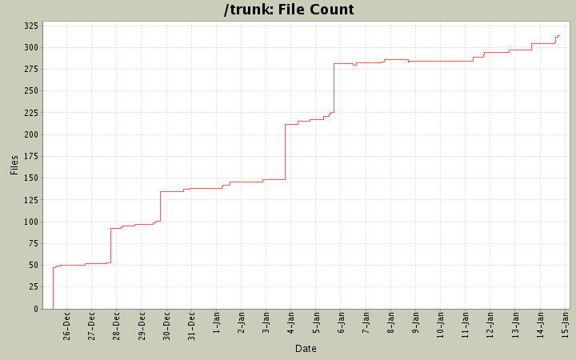
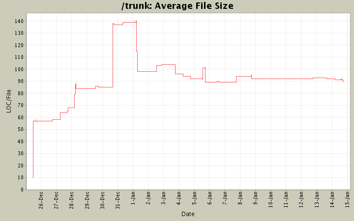

File Sizes and File Counts
- Total Files:
- 314
- Average File Size:
- 90.9 lines
- Average Revisions Per File:
- 4.0


File Types
| Type |
Files |
LOC |
LOC/File |
| Totals |
314 (100.0%) |
28533 (100.0%) |
90.8 |
| *.md |
96 (30.6%) |
9660 (33.9%) |
100.6 |
| *.rb |
43 (13.7%) |
6965 (24.4%) |
161.9 |
| *.html |
108 (34.4%) |
5149 (18.0%) |
47.6 |
| *.text |
20 (6.4%) |
1829 (6.4%) |
91.4 |
| *.dist |
19 (6.1%) |
1802 (6.3%) |
94.8 |
| *.sty |
1 (0.3%) |
749 (2.6%) |
749.0 |
| *.txt |
2 (0.6%) |
672 (2.4%) |
336.0 |
| *.tex |
3 (1.0%) |
239 (0.8%) |
79.6 |
| *.css |
4 (1.3%) |
186 (0.7%) |
46.5 |
| *.pl |
1 (0.3%) |
157 (0.6%) |
157.0 |
| Others |
16 (5.1%) |
1125 (3.9%) |
70.3 |
| Non-Code Files |
1 (0.3%) |
0 (0.0%) |
0.0 |
Largest Files
| File |
Lines of Code |
| tests/MarkdownTest_1.0/Tests/Markdown Documentation - Syntax.html.dist |
942 |
| docs/markdown_syntax.md |
899 |
| tests/MarkdownTest_1.0/Tests/Markdown Documentation - Syntax.text |
888 |
| tests/MarkdownTest_1.0/Tests/Markdown Documentation - Syntax.html |
840 |
| tests/unittest/misc_sw.md |
807 |
| tests/utf8-files/ucs.sty |
749 |
| lib/maruku/input/parse_span_better.rb |
692 |
| lib/maruku/output/to_html.rb |
689 |
| docs/maruku.md |
655 |
| docs/maruku.html |
634 |
| lib/maruku/input/parse_block.rb |
594 |
| lib/maruku/output/to_latex.rb |
538 |
| lib/maruku/attic/parse_span.rb.txt |
462 |
| tests/unittest/lists_ol.md |
404 |
| lib/maruku/output/to_latex_entities.rb |
367 |
| lib/maruku/tests/new_parser.rb |
359 |
| tests/others/sss06.md |
352 |
| LICENSE |
340 |
| lib/maruku/input/charsource.rb |
325 |
| bin/marutest |
322 |
Files With Most Revisions
| File |
Revisions |
| lib/maruku/parse_block.rb |
27 |
| lib/maruku/structures.rb |
25 |
| lib/maruku.rb |
22 |
| docs/maruku.md |
21 |
| lib/maruku/output/to_html.rb |
21 |
| lib/maruku/helpers.rb |
21 |
| lib/maruku/tests/new_parser.rb |
20 |
| lib/maruku/string_utils.rb |
20 |
| lib/maruku/to_html.rb |
19 |
| tests/unittest/email.md |
17 |
| tests/unittest/misc_sw.md |
16 |
| lib/maruku/parse_span_better.rb |
16 |
| tests/unittest/links.md |
16 |
| lib/maruku/version.rb |
16 |
| lib/maruku/to_latex.rb |
15 |
| docs/Makefile |
15 |
| lib/maruku/parse_span.rb |
14 |
| lib/maruku/parse_doc.rb |
14 |
| docs/maruku.html |
13 |
| tests/unittest/entities.md |
13 |